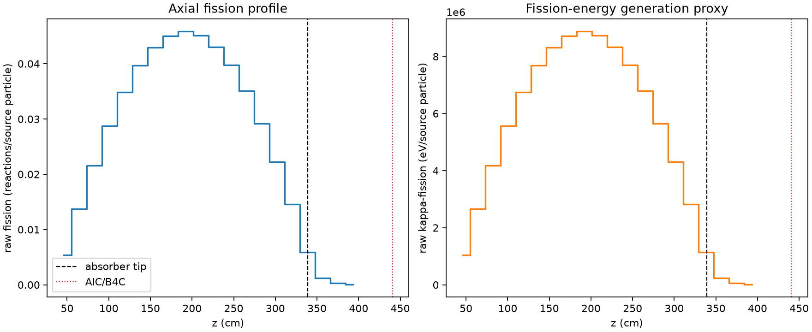
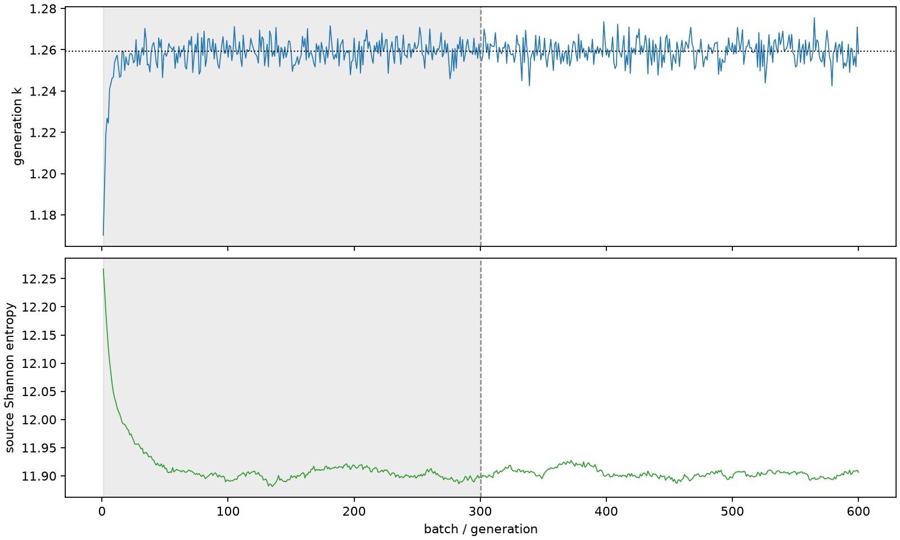

| field | value |
|---|---|
| experiment | V2-STAGE_128_OGRENCI_02-0024 |
| k | 1.2593072924776512 |
| MC standard error | 0.0001933990444692598 |
| seconds | 918.0962913449985 |
| acceptance | not_assessed |
| convergence | review_required |
Completed is output integrity only; physical and statistical review required. Zero tallies do not prove zero production or zero uncertainty.
| diagnostic | value |
|---|---|
| geometric fuel voxels | 5280 |
| zero fission tally voxels | 0 |
| low signal fuel voxels | 150 |
| low signal fission share | 6.988322210015453e-05 |
| low signal kappa share | 6.9908928334136e-05 |
| important fission share | 0.9500871484473504 |
| previous filter included | 5130 |
| duration estimate s | 1562.5173488400023 |
| actual minus estimate s | -644.4210574950039 |
| fission relative MC error | statistics |
|---|---|
| all_geometric_fuel | {"voxels": 5280, "positive_mean_voxels": 5280, "zero_mean_voxels": 0, "undefined_relative_error_voxels": 0, "median": 0.010771624745501598, "p95": 0.13018714455148023, "maximum": 0.3217783838866146} |
| low_signal | {"voxels": 150, "positive_mean_voxels": 150, "zero_mean_voxels": 0, "undefined_relative_error_voxels": 0, "median": 0.2197811775020045, "p95": 0.27256634578507843, "maximum": 0.3217783838866146} |
| important_95pct | {"voxels": 3713, "positive_mean_voxels": 3713, "zero_mean_voxels": 0, "undefined_relative_error_voxels": 0, "median": 0.009567551393579277, "p95": 0.014686064743765782, "maximum": 0.018435759578845107} |
| outside_previous_filter | {"voxels": 150, "positive_mean_voxels": 150, "zero_mean_voxels": 0, "undefined_relative_error_voxels": 0, "median": 0.2197811775020045, "p95": 0.27256634578507843, "maximum": 0.3217783838866146} |
| kappa_fission relative MC error | statistics |
|---|---|
| all_geometric_fuel | {"voxels": 5280, "positive_mean_voxels": 5280, "zero_mean_voxels": 0, "undefined_relative_error_voxels": 0, "median": 0.010759656259604122, "p95": 0.12995779492550563, "maximum": 0.3214581973383318} |
| low_signal | {"voxels": 150, "positive_mean_voxels": 150, "zero_mean_voxels": 0, "undefined_relative_error_voxels": 0, "median": 0.21951711038133898, "p95": 0.2721522570589812, "maximum": 0.3214581973383318} |
| important_95pct | {"voxels": 3713, "positive_mean_voxels": 3713, "zero_mean_voxels": 0, "undefined_relative_error_voxels": 0, "median": 0.009557974640546847, "p95": 0.014670993202719161, "maximum": 0.018417793986059604} |
| outside_previous_filter | {"voxels": 150, "positive_mean_voxels": 150, "zero_mean_voxels": 0, "undefined_relative_error_voxels": 0, "median": 0.21951711038133898, "p95": 0.2721522570589812, "maximum": 0.3214581973383318} |
| axial bin | fission share | kappa-fission share |
|---|---|---|
| 1 | 0.010568549127885761 | 0.010568996594917501 |
| 2 | 0.02676274454563633 | 0.02676272165107654 |
| 3 | 0.04195545804778783 | 0.04195531814792053 |
| 4 | 0.05592502574189086 | 0.05592477820653823 |
| 5 | 0.06778366701800298 | 0.06778366926666668 |
| 6 | 0.07706780203454877 | 0.07706757120443687 |
| 7 | 0.08354284195926656 | 0.08354277741504941 |
| 8 | 0.08752084695948766 | 0.08752060170811476 |
| 9 | 0.08907403675692445 | 0.08907385469276352 |
| 10 | 0.08762245170701856 | 0.0876222307512511 |
| 11 | 0.08360286475883785 | 0.08360263333478937 |
| 12 | 0.07735582635940626 | 0.07735552221801963 |
| 13 | 0.0682902594104242 | 0.06828991662285426 |
| 14 | 0.05678474785464983 | 0.056784785621466785 |
| 15 | 0.04326479355196374 | 0.0432647755153619 |
| 16 | 0.02828741160735357 | 0.02828726870353484 |
| 17 | 0.01151596589837382 | 0.011516892568985557 |
| 18 | 0.0023704697423333064 | 0.0023712150333399557 |
| 19 | 0.0005799280861694976 | 0.0005801159993119176 |
| 20 | 0.00012430883203807437 | 0.00012435474360056987 |
Histories include the inactive-to-active transition at batch 300. kappa-fission approximates fission energy production, not total heat deposition.

